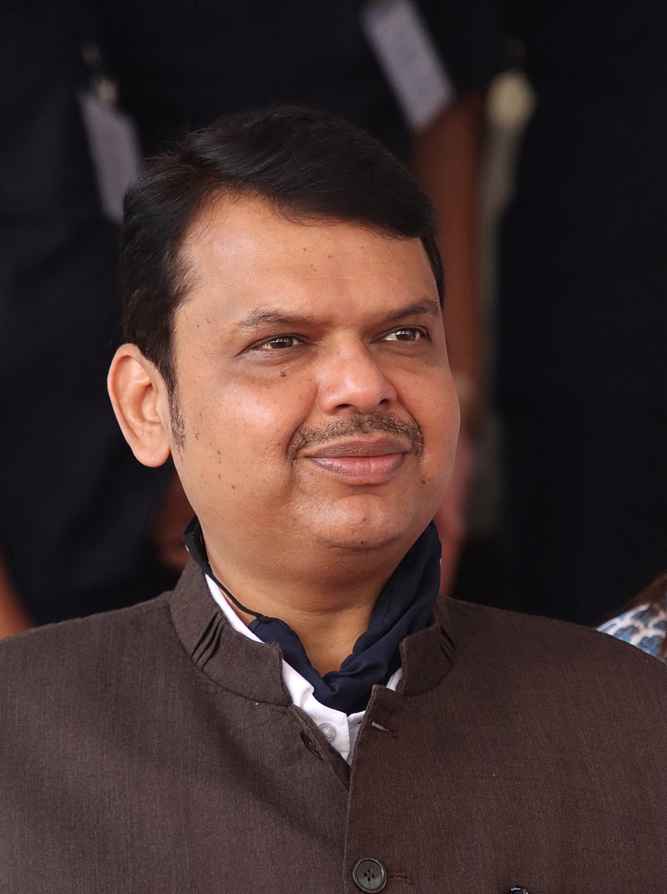
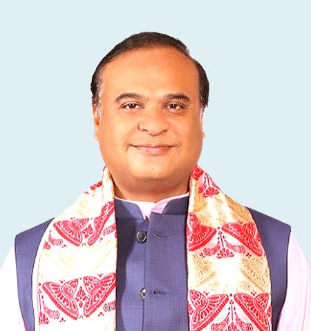

| S.NO | STATE | CAPITAL | CHIEF MINISTER | IMAGE |
|---|---|---|---|---|
| 1 | Tamilnadu | Chennai | M.K Stalin | |
| 2 | Maharastra | Mumbai | Devendra Fadnavis |  |
| 3 | West Bengal | Kolkata | Mamata Banerjee | |
| 4 | Uttar Pradesh | Lucknow | Pushkar Singh Dhami | |
| 5 | Kerala | Thiruvananthapuram | Pinarayi Vijayan | |
| 6 | Assam | Dispur | Himanta Biswa Sarma |  |
| 7 | Bihar | Patna | Nitish Kumar | |
| 8 | Goa | Panaji | Pramod Pandurang Sawant | |
| 9 | Gujarat | Gandhinagar | Bhupendra Patel | |
| 10 | Harayana | Chandigarh | Nayab Singh Saini | |